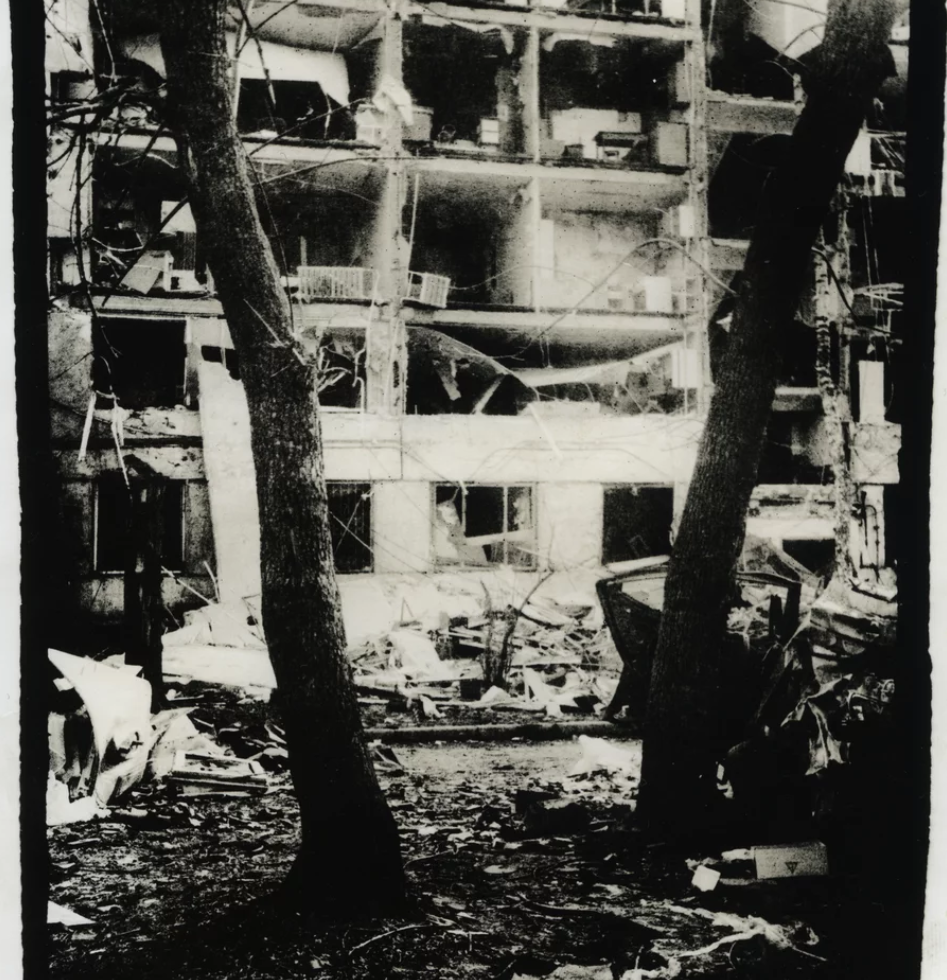
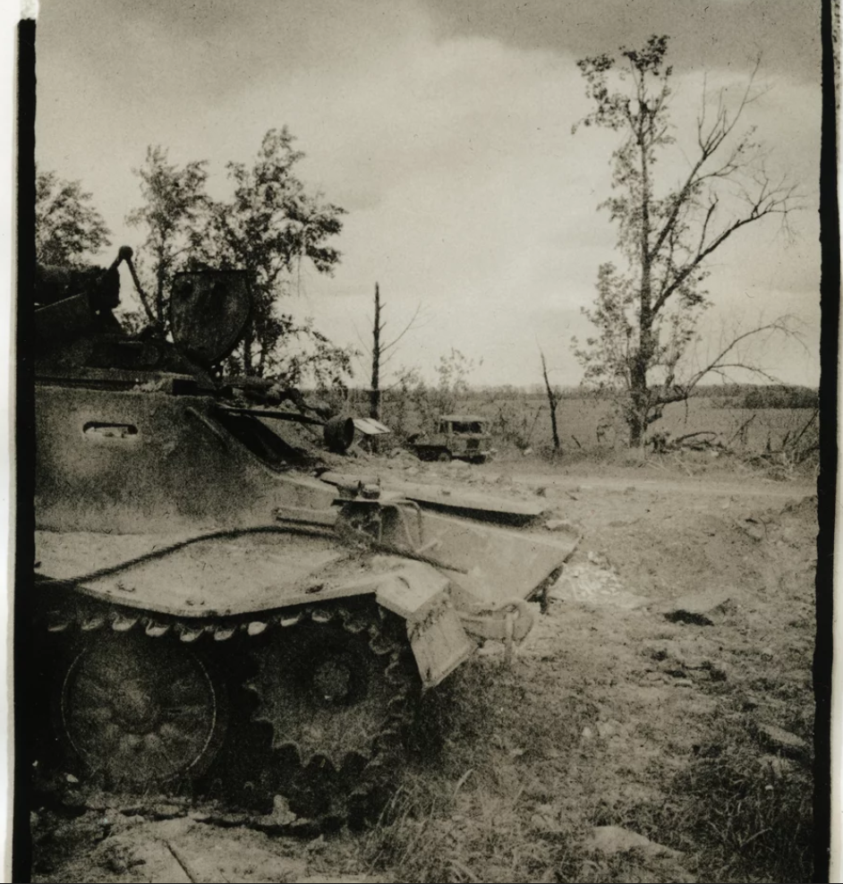
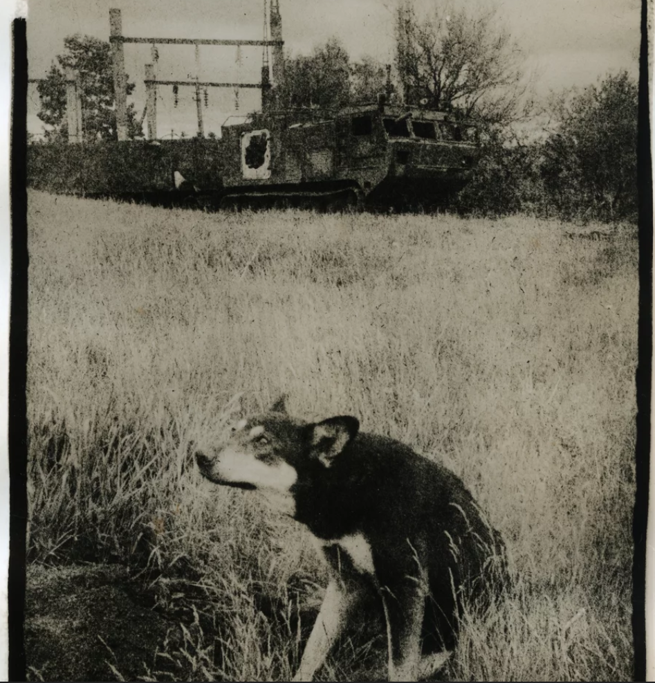
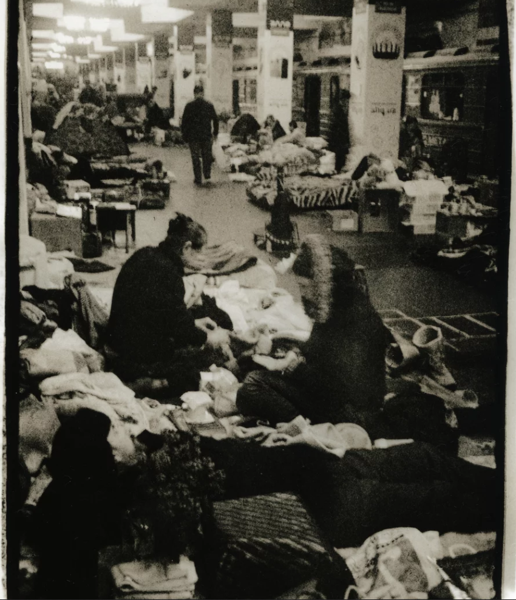

"Since the beginning of the war, my main focus has been to show
this war through photography," says Vladyslav Krasnoshchok, a
medical doctor and artist in the Ukrainian city of Kharkiv.
After Russia invaded Ukraine on Feb. 24, the country's
second-largest city, Kharkiv, came under siege for nearly three
months. The center of the northeastern city is just 30 miles from
the Russian border. Russian troops quickly advanced on Kharkiv and
pounded it for weeks with mortars, heavy artillery and cruise
missiles. Hundreds of thousands of people fled, while others took
shelter in cellars and the city's underground metro stations.
Krasnoshchok stayed put even as others sought safety farther west
or left the country. But he didn't want to use underground bomb
shelters.
"I never used basements or anything like that," he says, "because
it's damp down there. It's cold and dark. I don't need that."
Krasnoshchok, who's 41, describes himself as a "geopolitical
surrealist" painter. Once the war started, he wanted to document
the way the invasion dramatically changed the country.
"I only work with the physical photos," he says about his choice to use an Olympus Pen S 35 mm camera from the 1980s loaded with black-and-white film rather than a modern digital camera. He develops the film himself and prints his images at his home in one of Kharkiv's residential neighborhoods. "I really believe my work differs a lot from the digital images because it's actually in front of you," he says. "This is, like, actual art, and this is really important for history."

During the early part of the war, Krasnoshchok started wandering the
empty streets of Kharkiv with his camera. It was still winter. The
snow contrasted sharply against the blackened, bombed-out apartment
buildings.
"In just a 1 1/2 kilometer [almost 1 mile] radius from my house,
there's a lot of destruction here," he says. "They've been shelling
here a lot."
He says he found the stark, destroyed landscapes visually striking.
"They remind me of some kind of post-apocalyptic pictures of cities
like Chernobyl or Detroit," he says.
"Why do black and white? Because, with this method, I am fully controlling the whole process," he says. "From the moment I'm taking a picture, to using the chemicals, to actually printing it, to framing it — this is the purest way of making photography."
Krasnoshchok really wanted to do something creatively different from the many photographers documenting the war. "Everybody shoots with digital now," he says. "There are so many of them, and I'm pretty sure that if we look at all of their works, we're going to see a similar pattern to how they do it. With this physical method, I really believe that it's going to allow me to find my own point of view."
"In my art, I'm trying to study the composition and the structure of the image and its influence on the observer," Krasnoshchok says. "I stay here mostly so I don't miss anything interesting."

He's sent some of his negatives and some of his paintings to a
friend's home in central Ukraine for safekeeping. He posts many of
his photos on Instagram.
But he grew up in Kharkiv. His house was passed down to him by his
father. It's not just that Krasnoshchok doesn't want to leave, he
wants to be here in his home city at this moment.
"A war, it's a unique thing," Krasnoshchok says. "Sometimes in a
lifetime you have it once. Sometimes you don't have it at all."
As an artist, he wants to absorb it. He says he isn't worried about
getting killed or a bomb dropping on his house because that's out of
his control.
"I keep 90% of all of my art, all my belongings here because I
believe that if a missile hits here or something happens here, I'm
mentally prepared to say goodbye to all of this," he says, gesturing
to his living room, which is covered in his paintings. "This is a
wooden house — if something comes here, it's going to be absolute
destruction."
Krasnoshchok says he makes his art first for himself and then he
hopes that through his art, the viewer ends up seeing the world
differently.